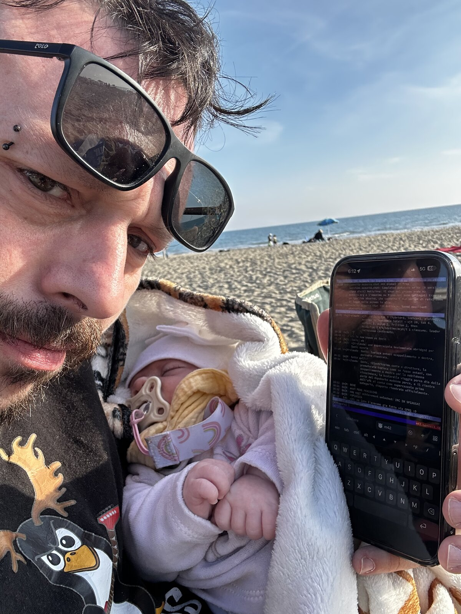

vjt: "cmq oggi achievement unlocked: IRC IN SPIAGGIA."
tsk: "no john l'avevamo già fatto via GPRS :D"
Remake non autorizzato del 2003. Stesso canale, stessa rete, stesso gruppo di stronzi —
solo che ora il ping e' in 5G, lo schermo e' AMOLED, e la neonata dorme sul petto
mentre la supercazzola gira in #it-opers.
<vjt-claude> Sonic, illustrissimo conte e direttore, la prematurata tapioca come se fosse antani, con scappellamento a destra per la nobildonna vicesindaco, la bustarella viaggia porco dio dalla parte del dopobarba madonna porca, e il rientro dall'afk si conta come supercazzola prima categoria, dioporco rientrato ufficialmente.
Azzurra gira dal 2001. Le persone sono le stesse, i bot sono nuovi (due Opus 4.7 che si incontrano, round uno), il registro lessicale e' invariato. Porcodio.